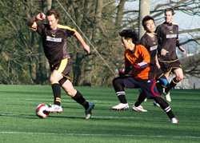
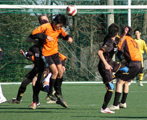
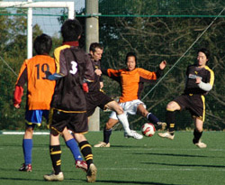

|
Daito Bunka Uni, Sunday 27th Jan,
After a 2 hour ride out to Daito Bunka we were ready to play, but were not sure if it was rugby or football as we saw the pitch! The sun was up and it was slightly warm apart from the nice cross wind blowing the light ball around.
The Panthers started well, taking most of the possession of the game but not really finishing any chances. Good movement on both sides of the park resulted in some excellent opportunities; one stands out as a nice series of passes from winger Chris to our illustrious captain Nick, which ended like a wet Christmas cracker, a flying scissor kick which looked promising with a gentle dribble being passed to their keeper.
Despite our possession and attacking football the Stoned’s scored first against the run of play with (in my opinion and I’m writing this!!) an offside goal. Saying that if it is good for Peter Crouch it is good for them! Again we tried to take the game by the scruff of the neck but we just couldn’t put the ball in the back of the net in the first half. A stern team talk at half time and the Panthers were ready for the win, or at least a goal.
The second half was a different story for both teams, after a lovely chip up to striker Jon from the midfield, he took the ball and scored a great goal through the keeper at an incredible angle, all this from the centre too. This seemed to spark us into life and a bit of movement on the right led to Kev running for the corner post crossing a ball in which bounced off the kack handed keeper into the goal. Not the most conventional but we’ll take it! The Stoneds didn’t want to take this laying down and started attacking our back four in force, we held them off well and after some hard tackles, which left a lot of them strewn around the 18yd box, we cleared the threat without a great deal of style but it was effective!!.
Passing play down the left led to a great cross from John where Yusuke and Lee (super defender if you couldn’t remember) were waiting, Yusuke bundled the ball across the line against a fumbling keeper. Panthers were up 3-1 and looking like a nice comfortable win, with only 10 mins left to play, all credit to the Stoneds they continued to push forward as the old and knackered Panthers continued to defend, a beautifully placed corner from the Stoneds saw the ball bounce off one of their forwards backsides, for perhaps the cheekiest goal of the season, this snapped the Panthers back into the game and defended well until the final whistle, with Man of the match going to Saco who put in a fantastic performance
Panthers finished the game 3-2 to take our second legitimate win of the season.
Sadly due to the location the celebration this week was not tea and biscuits in the club house but a long bus and train ride back to Tokyo. Saying that I had tea and biscuits at home and they were very nice!!(said in a Borat accent)
Go Panthers!
Report by Lee Rawlinson
|